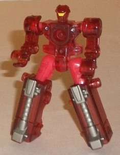
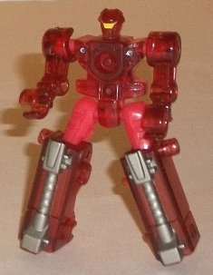
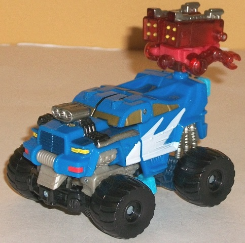
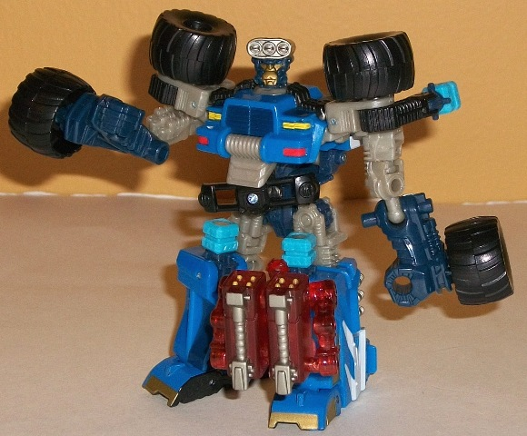
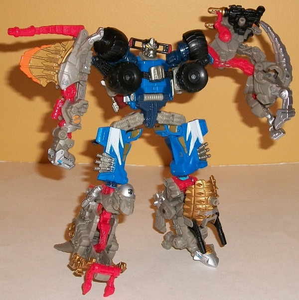

Bomb-Burst
Bomb-Burst

Allegiance : Minicon
Size : Mini-Con
Difficulty of Transformations : Very Easy
Color Scheme: Transparent red and some light red, yellow, and dull silver
Individual Rating : 5.1
Salvage
w/ Bomb-Burst
(NOTE: Because this set is composed of repaints,
this is not a full-blown review. This mainly covers any changes made to
the set and the color scheme, and merely compares it to the original versions
of these molds. For a review on Chainclaw, the mold used for Bomb-Burst,
go
here
. For a review on Mudslinger, the
mold used for Salvage, go
here
.)
Bomb-Burst

Allegiance
: Minicon
Size
: Mini-Con
Difficulty of Transformations
: Very
Easy
Color Scheme:
Transparent red and
some light red, yellow, and dull silver
Individual Rating
: 5.1
Bomb-Burst here is primarily
red, with his transparent plastic being a bit of a darker color than the
opaque plastic used for his back and upper legs. Both of the shades of
red complement each other fairly nicely, and the silver on the legs also
helps give a tad more color variety on the toy to boot. Unfortunately,
Bomb-Burst here has noticeably fewer paint apps than his predecessor Chainclaw,
so even with those bits of silver (and a tad of yellow painted on his missiles
and head), there's still a lot of unbroken red on him. On the plus side,
all the red does allow him to contrast nicely with Salvage.
No mold changes have
been made to Bomb-Burst.
Bomb-Burst is essentially
Chainclaw in red with less paint apps. I already liked Chainclaw's blue
more than Bomb-Burst's red (mostly because of personal color preference),
but the noticeably fewer paint apps definitely make me recommend Chainclaw
over this version.
 Salvage
Salvage



Allegiance
: Autobot
Difficulty of Robot/Vehicle Transformation
:
Easy
Difficulty of Torso Transformation
:
Easy
Color Scheme
: Black, light milky
brownish gray, blue, and some white, dull silver, light sky blue, dark
dull greenish blue, light red, yellow, and pale metallic gold
Individual Rating
: 6.8
Despite his bio making
him the same character as the
TF1 toy of the same
name
, PCC Salvage bears no real resemblance to his previous iteration
beyond them both being four-wheeled Autobots. That aside, Salvage's new
color scheme is a really attractive shade of blue that looks great even
by itself, really. Luckily, though, that's not the case-- in addition to
the black and the (admittedly rather blah) milky brownish gray he has as
his rather neutral secondary colors, he also has a fair amount of dark
greenish blue visible in his robot mode, which complements his other shade
of blue quite nicely. What's also nice about this color scheme is that
the light blue combiner ports complement the scheme rather than sticking
out like sore thumbs )like they do on most Power Core Combiners). There's
also some really nice paint accents on the figure, like the white "splash"
paint apps on the sides of his vehicle mode, or the gold truck windows
and face, or the silver engine and pipes. His headlights are both colored
to make them stand out quite a bit too and add even more color variety,
which is appreciated. The yellow eyes against the face on his combined
mode head also looks rather striking.
No overt mold changes
have been made to PCC Salvage, but the common structural weakness in this
mold's upper legs (detailed in my review of Mudslinger) appears to have
been fixed on this redeco.
Salvage is a fantastic
redeco, with great color choices and a great VARIETY of colors, as well.
Having the mold flaw from Mudslinger fixed is the cherry on top, and I'd
definitely recommend this redeco over its original version. However, that
said, it's still a decidedly medicore mold at best, and as such this is
easily the 2011 Power Core Combiner release I'd recommend the least.
Reviews by Beastbot